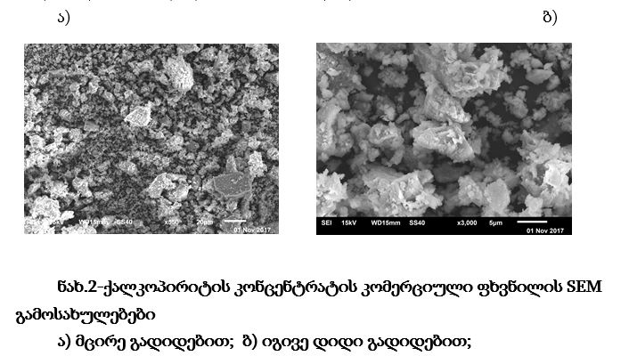
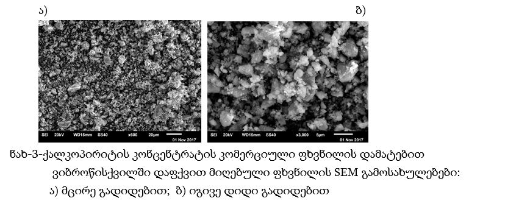

სამუშაოს მიზანი იყო ბუნებრივი მინერალის-ქალკოპირიტის(CuFeS2,)
მიკრონაწილაკებით შევსებული პოლიტეტრაფტორეთილენის (პტფე) ბაზის ახალი
კომპოზიციური მასალების მიღება და მათი ტრიბოტექნიკური თვისებების
კვლევა. კომპოზიციის შემვსებად გამოვიყენეთ ქალკოპირიტის
წვრილდისპერსიული ფხვნილი ნაწილაკების ზომების დისპერსიით რამდენიმე
ერთეული მიკრონიდან რამდენიმე ათეულ მიკრონამდე. პტფე-ს ბაზაზე
დამზადდა პოლიმერული კომპოზიციური მასალები 2,5, 5 და 10 მას.%
ქალკოპირიტის კონცენტრატის ფხვნილით შევსებით. კომპოზიციური მასალების
ხახუნის სხვადასხვა სიჩქარეებზე მიღებული ცვეთის ინტენსივობის
საუკეთესო ტრიბოტექნიკური მასალის „სუპერფლუვისის“ მაჩვენებლებთან
შედარების შემდეგ, ტრიბოლოგიური თვისებების გაუმჯობესების შემთხვევაში
მივიღებთ გაცილებით იაფ და ეფექტიან ტრიბოტექნიკურ მასალას
The research object was receiving new composite materials of
polytetrafluoroethylene using natural mineral -chalcopyrite (CuFeS2)
microparticles and research their properties On
polytetrafluoroethylene (PTFE) base were made polymeric composites
filled with 2,5,5 and 10 wt% chalcopyrite powder. The research goal
is to determine the wear intensity of the composites at different
friction speeds, and compare the results to the indicators of the
best tribotechnical material “Superfluvis”. In case of improving the
tribological properties, we will get quite cheap and effective
tribotechnical material.
პოლიმერების ბაზაზე ახალი ანტიფრიქციული
კომპოზიციური მასალების შექმნა დღემდე აქტუალურ ამოცანად ითვლება. ამ
თვალსაზრისით პტფე, კომერციული სახელწოდებით - „ტეფლონი“, არის
უნივერსალური მასალა, რომელსაც აქვს მრავალმხრივი გამოყენება, მაგრამ
ამასთანავე გააჩნია ტრიბოტექნიკური თვისებების გაუმჯობესების უდიდესი
პოტენციალი მოდიფიცირების გზით. საქმე ისაა, რომ პტფე ცნობილია, როგორც
შედარებით მყარი პლასტიკური მასალა, რომელსაც გააჩნია ყველაზე დაბალი
ხახუნის კოეფიციენტი (0,05-0,13) არსებულ პოლიმერებს შორის (და
არამარტო პოლიმერებს, არამედ ზოგადად ტრიბოტექნიკური დანიშნულების
მასალებს შორისაც). ამასთანავე მნიშვნელოვანია, რომ ყველა სხვა ცნობილ
პოლიმერულ მასალასთან შედარებით პტფე-ს გააჩნია უნიკალური თავისებურება
გამოხატული ჭრაზე მოცულობითი წინააღმდეგობის (τ, მპა) ზედაპირული ჭრის
წინააღმდეგობასთან (Ѕ, მპა) ფარდობის ძალიან დიდი მნიშვნელობით,
რომელიც ტოლია 5-ის, მაშინ როცა აღნიშნული თანაფარდობა სხვა არსებული
პოლიმერებისათვის არ აღემატება 1,5-ს და უმეტესობისათვის ერთზე
ნაკლებია [ 1 ]. მიუხედავად ხახუნის კოეფიციენტის უაღრესად მცირე
მნიშვნელობისა 300°C-მდე ტემპერატურათა დიაპაზონში (დაწყებული
კრიოგენული ტემპერატურებიდან), ტეფლონს გააჩნია 4 ძირითადი
ნაკლოვანება, რომელიც მნიშვნელოვნად ზღუდავს მის პირდაპირ გამოყენებას
ტრიბოტექნიკური დანიშნულების ანტიფირიქციული ნამზადების შესაქმნელად,
კერძოდ ესენია: არასაკმარისი მექანიკური სიმტკიცე, ცუდი (შეიძლება
ითქვას ძალიან ცუდი) სითბოგამტარობა, სითბური გაფართოების კოეფიციენტის
მაღალი მნიშვნელობა და ხახუნის კოეფიციენტის ზრდა 0,3-მდე მაღალ
სიჩქარეებზე სრიალით ხახუნისას. შესაბამისად აღნიშნული ნაკლოვანებები
კომპლექსში განაპირობებენ სუფთა ტეფლონისგან დამზადებული საკისრების,
დინამიკური შემამჭიდროვებლების და სხვა ტრიბოტექნიკური დანიშნულების
დეტალების ინტენსიურ ცვეთას, დენადობას და საბოლოო ჯამში ექსპლუატაციის
ხანგრძლივობის შემცირებას. დღეისათვის არსებულმა გამოკვლევებმა
აჩვენეს, რომ აღნიშნული თვისებების მართვა შესაძლებელია ე.წ.
მოდიფიკატორების- შემვსებების შერჩევითა და შეყვანით პტფე-ს მატრიცაში.
მოსინჯულ იქნა შემვსებად ჟანგეულების, კარბიდების, ნიტრიდების,
კერამიკული მასალების, ბორიდების, ნახშირბადის და სხვა ნივთიერებების
მიკრო და ნანოფხვნილები სხვადასხვა მორფოლოგიისა, ზომებისა და
კომპოზიციური შედგენილობის ნაწილაკების სახით. მიუხედავად ბოლო წლებში
ამ მიმართულებით მიღწეული წარმატებებისა მიღებული პტფე-ს ბაზის
ანტიფრიქციული და ფრიქციული მიკრო/ნანო კომპოზიტების ცვეთამედეგობის
პარამეტრები ჯეროვნად ვერ აკმაყოფილებენ ტრიბოტექნიკის თანამედროვე,
გაზრდილ მოთხოვნებს. პოლიმერებს შორის, რომლებიც გამოიყენება ხახუნის
კვანძების დეტალების დასამზადებლად, ფიზიკურ-მექანიკური და
ტრიბოლოგიური თვისებებით საუკეთესო კომპლექსად მიჩნეულია ტეფლონის
ბაზის კომპოზიტები და ისინი გამოიყენებიან ყველაზე საპასუხისმგებლო
ტექნიკური სისტემების ხახუნის კვანძებში. პტფე-ს ბაზაზე მიღებული
კომპოზიციური მასალების მნიშვნელოვანი თვისებაა მათი ტემპერატურათა დიდ
დიაპაზონში (კრიოგენულის ჩათვლით) მუშაობის უნარი ხახუნის კოეფიციენტის
დაბალი და სტაბილური (~ 0,15-ის მახლობლობაში) მაჩვენებლის
შენარჩუნებით მდორე სრიალის პირობებში, რაც მნიშვნელოვანია ტექნიკის
(კვანძების) ექსტრემალურ პირობებში გამოყენებისას. თუმცა დღემდე
პრობლემად რჩება აღნიშნული ტრიბოტექნიკური დანიშნულების მასალების
ცვეთამედეგობის შემდგომი გაზრდა. კერძოდ, წარმოების მიერ დღემდე
გამოშვებული ცნობილი საუკეთესო ანტიფრიქციული მასალა „სუპერფლუვისი“,
რომელიც წარმოადგენს ნახშირბადის ბოჭკოთი არმირებულ (25%-ით შევსებულ)
პტფე-ს, მიუხედავად ხახუნის კოეფიციენტის დაბალი მნიშვნელობისა (ძალიან
ახლო სუფთა ტეფლონის ხახუნის კოეფიციენტის მნიშვნელობასთან) მცირე და
საშუალო სიჩქარეებზე ფოლადის ან თუჯის კონტრსხეულთან სრიალით
ხახუნისას, ხასიათდება საკმაოდ მაღალი ცვეთის ინტენსივობით, რომლის 1-2
რიგით შემცირება უკვე ტრიბონიკის დღევანდელი მოთხოვნილების ამოცანაა.
მეორე არანაკლებ მნიშვნელოვანი ტექნიკურ-ეკონომიკური ამოცანაა
აღნიშნული ტიპის მასალის გაიაფება, რადგან „სუპერფლუვისი“ ძალიან ძვირი
მასალაა მისი დამზადების ტექნოლოგიის სირთულის გამო. ზემოთქმულიდან
გამომდინარე მოცემული სამუშაოს მთავარ მიზანს წარმოადგენს საქართველოში
წარმოებული ბუნებრივი მინერალის - ქალკოპირიტის კონცენტრატის ფხვნილის
მიკრონაწილაკებით პტფე-ს მატრიცის შევსების მარტივი ფხვნილოვანი
მეტალურგიის მეთოდის გამოყენებით ახალი, იაფი ანტიფრიქციული კომპოზიტის
მიღება, რომლის ცვეთის ინტენსივობა, სრიალით ხახუნის სიჩქარეთა ფართო
დიაპაზონში, როგორც მცირე, ისე დიდი დატვირთვების პირობებში, ერთი
რიგით მაინც ნაკლები იქნება „სუპერფლუვისის“ მაჩვენებელთან შედარებით.
პტფე-ბაზის კომპოზიტის მისაღები კაზმის შესადგენ (წონითი/მოცულობითი)
მასალად ჩვენს მიერ აღებული იქნა კომერციული პტფე-ს ფხვნილი სიმკვრივით
2200კგ/მ3 და მარცვლები ზომე-ბით 0,2÷1მკმ (სერთიფიკატის
მონაცემებით),ხოლო შემვსებად ადგილობ-რივი მინერალური ნედლეული -
ქალკოპირიტის კონცენტრატი (კომერციული), რომლის ძირითად ფრაქციას
(≥85%) წარმოადგენდა CuFeS2 (ქალკო-პირიტი) მინერალი, სიმკვრივით
4,1-4,3 გ/სმ3 და სისალით 3,5÷4 მოოსის სკალის მიხედვით. აღებული
კონცენტრატის ქიმიური კომპოზიცია განსაზღვრული რენტგენო-ფაზური
ანალიზით (სერთიფიკატის მონაცემები) მოყვანილია ცხრილში (1)
აღნიშნული ფხვნილების სხვადასხვა შედგენილობის კომპოზიციური კაზმების
მომზადებამდე, შემთხვევითად, აღებული სინჯების მეშვეობით ვუტარებდით
გამოკვლევებს მარცვლების ზომების, მორფოლოგიისა და კომპოზიციური
შედგენილობის თვალსაზრისით.
ჩვენმა დაკვირვებამ აჩვენა, რომ პტფე ფხვნილის მარცვლების ზომის დისპერსიის საზღვრები განსხვავებულია სერთიფიკატით მოცემული საზღვრებისაგან, კერძოდ, როგორც ნახ. 1 ა, ბ რემ გამოსახულებები აჩვენებენ, სინამდვილეში თავისუფლად დაყრილ მდგომარეობაში პტფე ფხვნილის მარცვლების ზომების დისპერსია დევს 0,5÷5 მკმ დიაპაზონში და სერთიფიკატში მითითებული 0,2 მკმ ზომის ნაწილაკები პრაქტიკულად არ დაიმზირება, ან არიან ცალკეული ძლიერი კოალესცენციის მდგომარეობაში მყოფი კოაგულანტების სახით. ამასთანავე დაიმზირება პტფე მარცვლების მოლეკულებად დაძენძვის შედეგად წარმოქმნილი გრძელი ნანო ძაფები მარცვლების შეერთებების სახით. (იხ. ნახ. 1 ა, ბ). თავისუფლად დაყრილი პტფე-ს ფხვნილი ძალიან ადვილად იტკეპნება, განიცდის ძლიერ პლასტიკურ დეფორმაციას მარცვლების შეზრდითა და გაბრტყელებით რამდენიმე ათეულიდან ასეულებამდე მიკრონის ზომის აგრეგატებამდე. ამიტომ აუცილებელია კაზმის მომზადებისას შერევა მოხდეს ისეთ პირობებში, რომ ნარევი ფხვნილის (შერევის პროცესში და შემდგომ) პრესფორმაში მოთავსებამდე ფხვნილის ნაწილაკებმა არ განიცადონ მადეფორმირებელი ზემოქმედება. ნახ. 2. ა,ბ-ზე მოყვანილია ქალკოპირიტის კომერციული კონცენტრატის ფხვნილიდან შემთხვევითად აღებული სინჯის რემ გამოსახულებების მცირე (ნახ. 9. ა) და შედარებით დიდი (ნახ. 2. ბ) გადიდებებით
ნახ 2 ჩანს, რომ საწყისი კონცენტრატის ფხვნილი, გამოყენებული ჩვენს მიერ პტფე-ს შემვსებად, შედგება მყიფე მსხვრევის პროდუქტის მსგავსი ნაწილაკებისაგან, ზომების დისპერსიით ძირითადად განაწილებული სამ დიაპაზონში 1÷5µm 5÷10µm და10÷50µm წილობრივი თანაფარდობით შესაბამისად: 1 : 3 : 2. ფხვნილის ელექტრონულ გამოსახულებაზე დაიმზირება ნაწილაკები განსხვავებული კონტრასტით, რაც მიუთითებს მათ განსხვავებულ ატომურ შედგენილობაზე, ელექტრონების გაბნევისა და შთანთქმის სხვადასხვა უნარის გამო. ამასთან რუხი კონტრასტის ნაწილაკები შეადგენენ ფხვნილის ძირითად ნაწილს, ხოლო თეთრი კონტრასტის ნაწილაკების რაოდენობა არ აღემატება 10%-ს პტფე ბაზის კომპოზიტის მისაღებად შემვსების სახით შერჩეულ იქნა ქალკოპირიტი, რომლის საწყისი კომერციული კონცენტრატი დავფქვით ვიბრაციულ წისქვილში 1 საათის განმავლობაში. დაფქვის შემდეგ მიღებული კონცენტრატის ფხვნილის სინჯის სხვადასხვა გადიდების რემ-გამოსახულებები მოყვანილია ნახ 3 ა, ბ. ჩანს, რომ დაფქვის შედეგად მიღებულ ფხვნილში წვრილი ფრაქციის წილმა იმატა, ამასთანავე მსხვილ ფრაქციაში მაქსიმალურად დიდი ნაწილაკების ზომები შემცირებულია; ნაწილაკების ზომების დისპერსია ანალოგიურად საწყისი ფხვნილისა ისევ სამ ძირითად დიაპაზონშია შემდეგი საზღვრებით: 1÷3μm; 5÷10μm და 10÷40μm ფრაქციათა წილობრივი თანაფარდობის განსხვავებული თანაფარდობით: 3 : 2 : 1.
მიუხედავად მრავალი მკვლევარის მცდელობისა პტფე-ს მოდიფიცირებისა კერამიკების, ჟანგეულების, ლითონების, ნახშირბადის ნანო და მიკრო ნაწილაკების მეშვეობით ვერ იქნა მიღებული ტრიბონიკის თანამედროვე მოთხოვნების შესაბამისი ცვეთამედეგობა პტფე-ბაზის ანტიფრიქციული მიკრო/ნანო კომპოზიტებისათვის. ამ მიზნის მისაღწევად ჩვენი სამუშაოს ძირითადი იდეა იყო ისეთი შემვსების შერჩევა, რომლის ფხვნილის ნაწილაკების ზომები, მორფოლოგია, თვისებები და ოპტიმალური რაოდენობა პტფე-ს მატრიცაში შეყვანისას უზრუნველყოფდნენ მიღებული კომპოზიტის ხახუნის კოეფიციენტის შენარჩუნებას პტფე-ს დონეზე. შენარჩუნებისას მისი მექანიკური თვისებების ამაღლებას და ცვეთის ინტენსივობის შემცირებას ორი რიგით და მეტად ტეფლონთან შედარებით. ამასთანავე, რაც აგრეთვე მნიშვნელოვანია, ახალი კომპოზიტის მიღება მარტივი, ფხვნილოვანი ტექნოლოგიით, იაფი შემვსების გამოყენებით, საბოლოო პროდუქტის- იაფი ანტიფრიქციული მასალის მისაღებად არსებულ საუკეთესო კომერციულ ანალოგიური დანიშნულების პტფე-ბაზის კომპოზიტებთან შედარებით. ხახუნის გადაცემა პოლიმერულ კომპოზიტებს შორის ხშირად ხდება ხახუნის დროს და გადატანილი ფირის ფენა შეიქმნება კონტრსხეულის შეპირაპირებულ მოხახუნე ზედაპირზე, რომელსაც შეუძლია არა მხოლოდ გააუმჯობესოს კონტრსხეულის ზედაპირის მახასიათებლები, არამედ შეამციროს ცვეთა და ხახუნი კომპოზიტებს შორის. აქედან გამომდინარე, გადატანილ ფირს აქვს განმსაზღვრელი ეფექტი პოლიმერული კომპოზიტების ტრიბოლოგიურ თვისებებზე [2,3]. გადატანილი ფირის ფორმირება დამოკიდებულია რამდენიმე ფაქტორზე, როგორიცაა ხახუნის პირობები, კონტრსხეულის ზედაპირის ტოპოგრაფია, შემვსების ტიპი და შემადგენლობა და ა.შ.[4]. ბევრმა კვლევამ აჩვენა, რომ არაორგანული ფხვნილების დამატებას პოლიმერში შეუძლია ხელი შეუწყოს ხახუნისას გადატანილი ფირის ფორმირებას. პტფე-ს ბაზაზე დამზადდა პოლიმერული კომპოზიციური მასალები 2,5, 5 და 10 მას.% ქალკოპირიტის კონცენტრატის ფხვნილით შევსებით. წინასწარ ხდებოდა პტფე-ის ფხვნილის მექანიკური აქტივირება პროპელერიან შემრევში 2-3 წუთის, შემდეგ იმავე შემრევში ხდებოდა შემვსების შერევა 2-2,5 წუთის და გაშრობა თერმოსტატში 120°C-ზე 1 საათის განმავლობაში. ნიმუშების მიღება ხდებოდა ცივად დაწნეხვით 100მპა წნევით, შემდეგ მათი შეცხობით ელეტროღუმელში 365°C ტემპერატურაზე 2 სთ დაყოვნებით და გაცივებით ოთახის ტემპერატურამდე. ნიმუშები ტრიბოლოგიური და მექანიკური გამოცდებისათვის დამზადდა მილისების და ძელაკების სახით სათანადო ზომებით: Ø28x Ø20x20 და Ø10x20. დადგინდა, რომ ზოგადად პოლიმერების და კერძოდ პტფე-ს მატრიცის აღნიშნული სხვადასხვა ტიპის შემვსებებით მოდიფიცირების დადებითი ეფექტი მათი ტრიბოლოგიური თვისებების გაუმჯობესებისათვის განპირობებულია გარკვეულწილად პოლიმერში მოლეკულათაშორისი ბმების შესუსტებით (ძირითადად ნანონაწილაკების შეყვანისას) და მიღებული კომპოზიციური მასალის ოპტიმალური სტრუქტურის ფორმირებით, ხახუნის პროცესში ცვეთის ინჰიბიტორის როლის შესრულებით შემვსების მიკრო/ნანო ნაწილაკების მიერ ხახუნის საწინააღმდეგო კონტრსხეულის ზედაპირზე გადატანილი ფირის მუშაობის უნარის ამაღლებით. SEM და EDX მეთოდების გამოყენებით გამოკვლეული იქნა შეუვსებელი პტფე-ს გამოსაცდელი ნიმუშების ზედაპირის მორფოლოგია და გაცვეთილი ზედაპირების ელემენტური შედგენილობა, პტფე-ს ბაზის 3 ახალი კომპოზიტის ნიმუშების და შესაბამისი თუჯის კონტრსხეულების ტრიბოლოგიურ წყვილში მუშაობის გარკვეული პერიოდის შემდეგ. ნიმუშებს დავუდგინეთ სიმკვრივე, გავუზომეთ განვითარებული დეფორმაცია 30 მპა წნევით კუმშვისას, გამოვიკვლიეთ ტრიბოლოგიური თვისებები, კერძოდ სიმკვრივე და დეფორმაციის ხარისხი, ვვარაუდობდით, რომ პტფე მატრიცის ქალკოპირიტის ნაწილაკებით შევსება გამოიწვევდა პტფე-ს კუთრი წონის ზრდას და განვითარებული დეფორმაციის შემცირებას, რაც სიმტკიცის ზრდის მაჩვენებელია. მიღებული ექსპერიმენტული შედეგების შედარებამ აჩვენა, რომ გამოყენებული შემვსები აუმჯობესებს ტეფლონის სიმტკიცეს კუმშვაზე 3-ჯერ მეტად, ხოლო ცვეთის ინტენსივობა ოპტიმალური შედგენილობის (5 მას % შემვსები) კომპოზიტს გააჩნია ორი რიგით ნაკლები ტეფლონთან შედარებით და ერთი რიგით (და მეტით) ნაკლები ვიდრე კომერციულ საუკეთესო ანტიფრიქციულ კომპოზიტს - „სუპერფლუვისს“